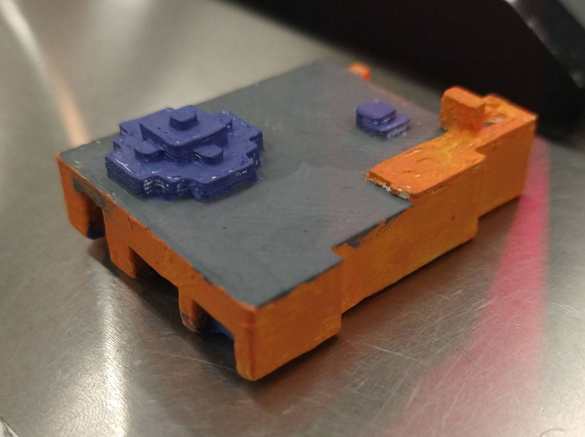
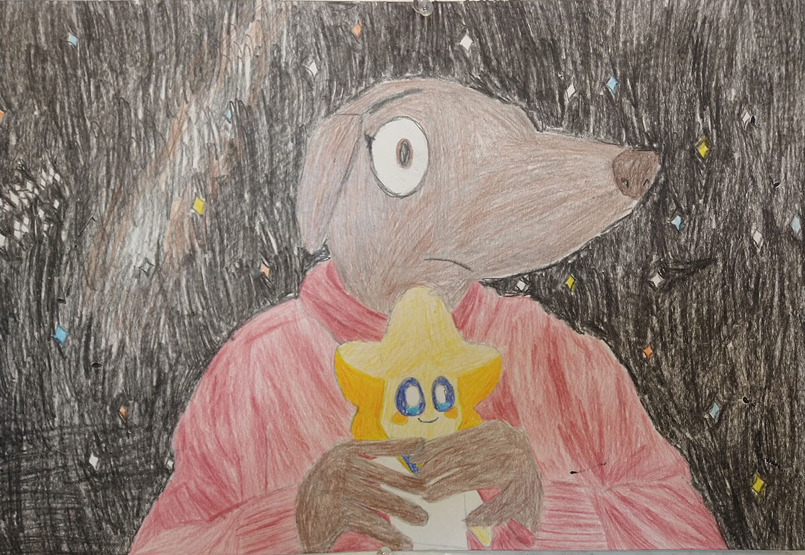
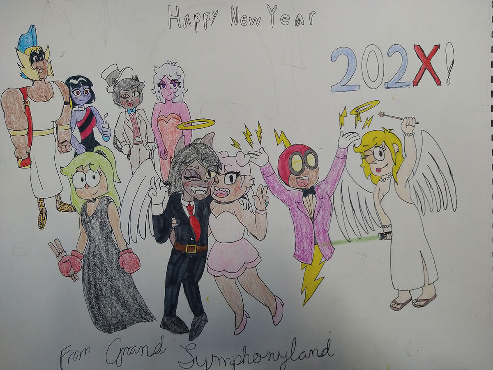
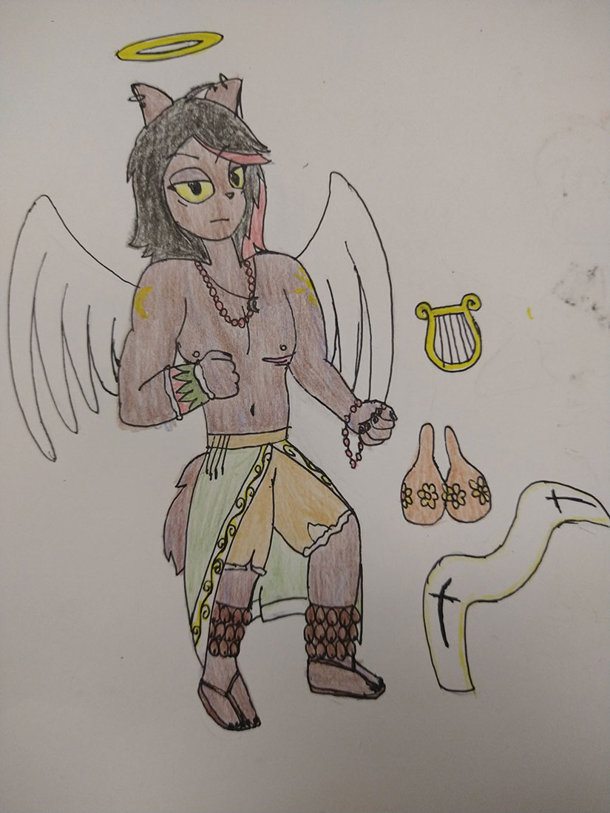
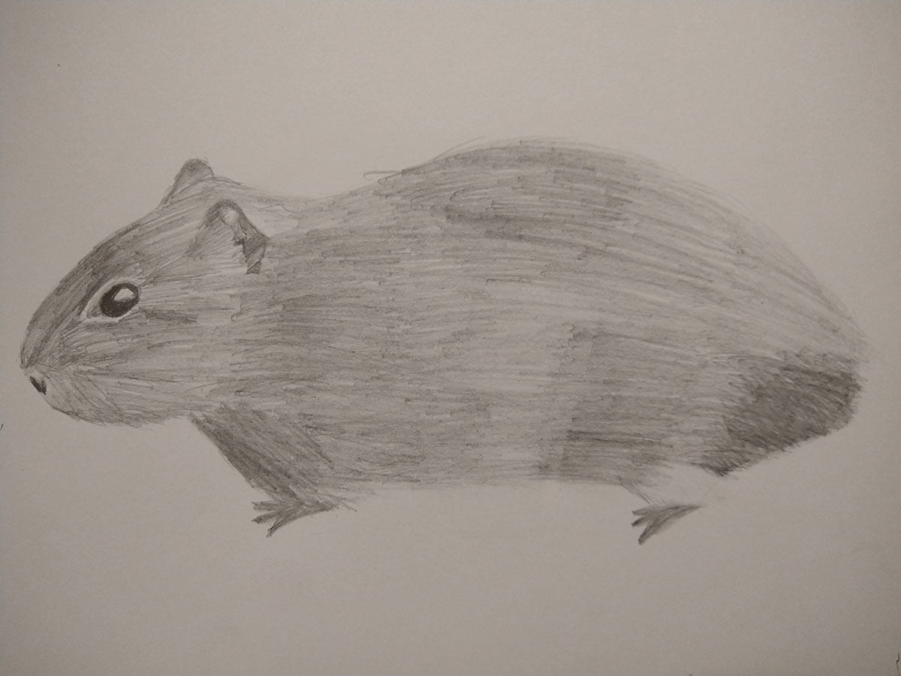

About Me
My Work

Mini Tech Museum
This is a 3D printed version of the Tech Museum of Innovation in San Jose. I created the model in Minecraft, then I exported the world into Mineways, then I exported it again into Flashpoint. I then exported it once again into a file format for 3D printers and printed it out. I then painted the model to resemble the actual building. Originally made for my Intro to Digital Media Art class in Spring 2024

Me and Lumi
This is a drawing of my "fursona" holding my favorite plushie: Lumi from Lumi and the Great Big Galaxy. It was done as a part of my Intro to Drawing class in Spring 2025. The species I chose to represent myself with was a pakicetus, an ancestor of the modern day whale.

Happy New Year 202X!
New Art! I drew Puck Reverie and his friends & acquaintances taking a selfie at Grand SymphonyLand (Disneyland) while celebrating the New Year! He's with his best friends Sparko, Punching Judy, Sally Harmony [note: Sally is my Original Character for a fanfiction idea that I have planned] and his sweetheart Glitter Starlight! They met up with the Point Prep crew as well! Phoebe, Demon Queenie, Purrcival and Chiff are all present! I didn't draw a background for it yet but I promise I'll learn to do them someday.
Original text from DeviantArt.
Link to the pic.
Yaqui Puck Reverie
Hello! I'm back with my first brand new completed Puck art of the year! I drew him as having reconnected with his Yaqui & Catholic heritage. I gave him a robe that he ties around his tattered shorts (formerly pants) and a gauntlet (he lost the other one). I also gave him scars on his chest underneath his breast area. I've seen a couple of fanarts that draw him like that and I think they look pretty cool. He's not meant to be trans in my interpretation (at least not yet) but scars make for a cool design. Puck also has cascabels (I can't think of a better word in English; I guess the closest thing would be rattle bells?) on his ankles that help him with his music. Puck now owns maracas that help him make music. He uses them alongside his trusty harp. He also dyes his hair red cause it makes him look cool/cute. Puck has some other artifacts and keepsakes that he holds dear to him. I wonder if he'd ever keep any of his artifacts in the Void. [Note: Puck Reverie is my namesake character; when I was watching OK KO on Cartoon Network, I was immediately drawn to him and wanted to learn more about him. I was disheartened to learn that there is little information about him in canon which is why I decided to come up with my own interpretations and headcanons for him.]
Original text from DeviantArt.
Link to the pic.
Wild Guinea Pig
This is a drawing of a wild guinea pig I made a couple of years ago. It's a sketch I did with pencils in my sketchbook based on a reference photo.
Contact Me
Email: aaronromero489@gmail.com